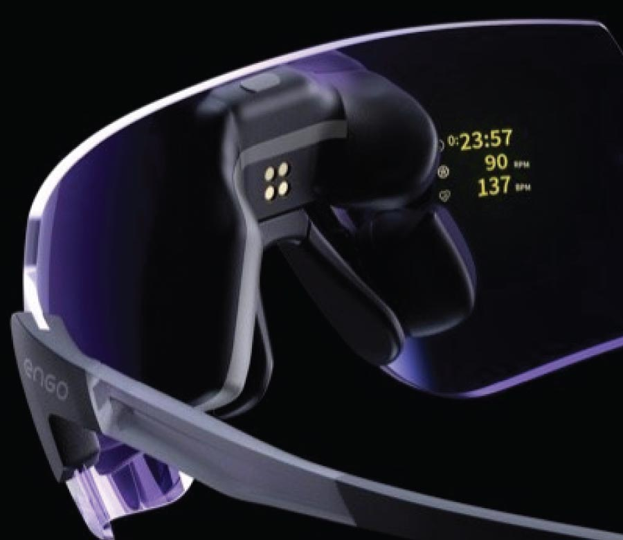

Rotorflight · Bench tools
ActiveLook Preview
Waiting for simulator sensor feed
ActiveLook display
304 × 256 · EnGo 2

Flight phase
Automatic from sensors
AUTO
PRE
FLIGHT
POST
Layout & Slots
4 slots · local defaults
Layout for this phase
Waiting for simulator settings
Save to simulator
Restore defaults
Simulator telemetry
Manual fallback values
Flight Control
Arm
Governor
OFF
IDLE
SPOOLUP
RECOVERY
ACTIVE
THROTTLE-OFF
LOST HEADSPEED
AUTOROTATION
BAILOUT
DISABLED
DISARMED
Headspeed · RPM
Power System
Main voltage · V
BEC voltage · V
Current · A
Consumption · mAh
Fuel · %
Flight Profiles
PID profile
1
2
3
4
5
6
Rate profile
1
2
3
4
5
6
Battery profile
1
2
3
4
5
6
Other Sensors
ESC temperature · °C
MCU temperature · °C
Throttle · %
Altitude · m
Cell count
Preview-only Values
Timer · s
Link · dB